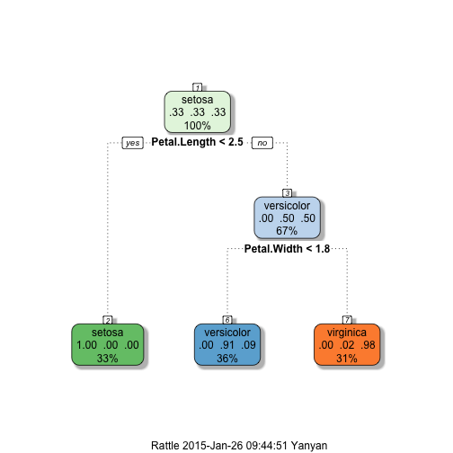

This page includes som functions to show the content in data sets.
- Use the library function
library(caret)
- Use the data function
data(cars)
- Use summury function
summary(cars)[1]
## [1] "Min. : 4.0 "
Yan
St
This page includes som functions to show the content in data sets.
library(caret)
data(cars)
summary(cars)[1]
## [1] "Min. : 4.0 "
\[f_Y(x)=\frac{1}{\sqrt{(2\pi)^n|\boldsymbol\Sigma|}} \exp\left(-\frac{1}{2}({x}-{m})^T{\boldsymbol\Sigma}^{-1}({x}-{m}) \right)\]
data(iris)
lm(Species ~ Sepal.Length + Sepal.Width, data=iris)
library(ggplot2);library(rpart)
library(lattice);library(caret)
data(iris)
modFit <- train(Species ~ .,method="rpart",data=iris)
print(modFit$finalModel)
## n= 150
##
## node), split, n, loss, yval, (yprob)
## * denotes terminal node
##
## 1) root 150 100 setosa (0.33333 0.33333 0.33333)
## 2) Petal.Length< 2.45 50 0 setosa (1.00000 0.00000 0.00000) *
## 3) Petal.Length>=2.45 100 50 versicolor (0.00000 0.50000 0.50000)
## 6) Petal.Width< 1.75 54 5 versicolor (0.00000 0.90741 0.09259) *
## 7) Petal.Width>=1.75 46 1 virginica (0.00000 0.02174 0.97826) *
## Rattle: A free graphical interface for data mining with R.
## Version 3.4.1 Copyright (c) 2006-2014 Togaware Pty Ltd.
## Type 'rattle()' to shake, rattle, and roll your data.
